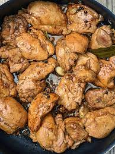

Adobong Manok

A Famous Filipino Dish
Adobo is a dish recognized by the whole world
Chopped chicken stewed in soy sauce and vinegar will definitely make you crave for moe
Ingridients
- 2 lbs chicken
- 3 pieces dried bay leaves
- 6 tablespoons soy sauce
- 4 tablespoons white vinegar
- 5 cloves garlic
- 1 1/2 cups water
- 3 tablespoons cooking oil
- 1 teaspoon sugar
- 1/4 teaspoon salt
- 1 teaspoon whole peppercorn
Steps
- Combine chicken, soy sauce, and garlic in a large bowl. Mix well. Marinate the chicken for at least 1 hour. Note: the longer the time, the better
- Heat a cooking pot. Pour cooking oil.
3
- When the oil is hot enough, pan-fry the marinated chicken for 2 minutes per side.
- Pour-in the remaining marinade, including garlic. Add water. Bring to a boil
- Add dried bay leaves and whole peppercorn. Simmer for 30 minutes or until the chicken gets tender
- Add vinegar. Stir and cook for 10 minutes.
- Put-in the sugar, and salt. Stir and turn the heat off.Serve hot. Share and Enjoy!